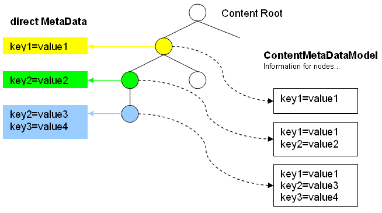

|
||||||||||
| PREV CLASS NEXT CLASS | FRAMES NO FRAMES | |||||||||
| SUMMARY: NESTED | FIELD | CONSTR | METHOD | DETAIL: FIELD | CONSTR | METHOD | |||||||||
public interface ContentMetaDataModel
A model for accessing aggregated MetaData of content model nodes.
The meta data that may be provided by individual nodes of the content model are
combined according to the hierarchy that the ContentModel
exposes for these nodes. Values set on the node itself take precedence over
values set for its parents.
Example: Page 1 is the parent of page 2, page 2 is the parent of page 3.
| Page | Individual meta data | Aggregated meta data |
|---|---|---|
| Page 1 | key1=value1 | key1=value1 |
| Page 2 | key2=value2 | key1=value1 key2=value2 |
| Page 3 | key2=value3 key3=value4 | key1=value1 key2=value3 key3=value4 |

The non-aggregated meta data of a content node can be obtained by checking that
the node implements MetaDataProvider and if true by calling the
method MetaDataProvider.getMetaData().
The aggregated meta data can be obtained by calling getMetaData(Object).
| Method Summary | |
|---|---|
MetaData |
getMetaData(java.lang.Object aNode)
Returns the aggregated meta data for the given node. |
| Method Detail |
|---|
MetaData getMetaData(java.lang.Object aNode)
throws ModelException,
ObjectNotFoundException
getMetaData in interface MetaDataModelaNode - a content node of the content model to get meta data for.
MetaData object for the given node, never null
ModelException - if an exception in the model code occurs
ObjectNotFoundException - if the given node is not part of the associated model
|
||||||||||
| PREV CLASS NEXT CLASS | FRAMES NO FRAMES | |||||||||
| SUMMARY: NESTED | FIELD | CONSTR | METHOD | DETAIL: FIELD | CONSTR | METHOD | |||||||||